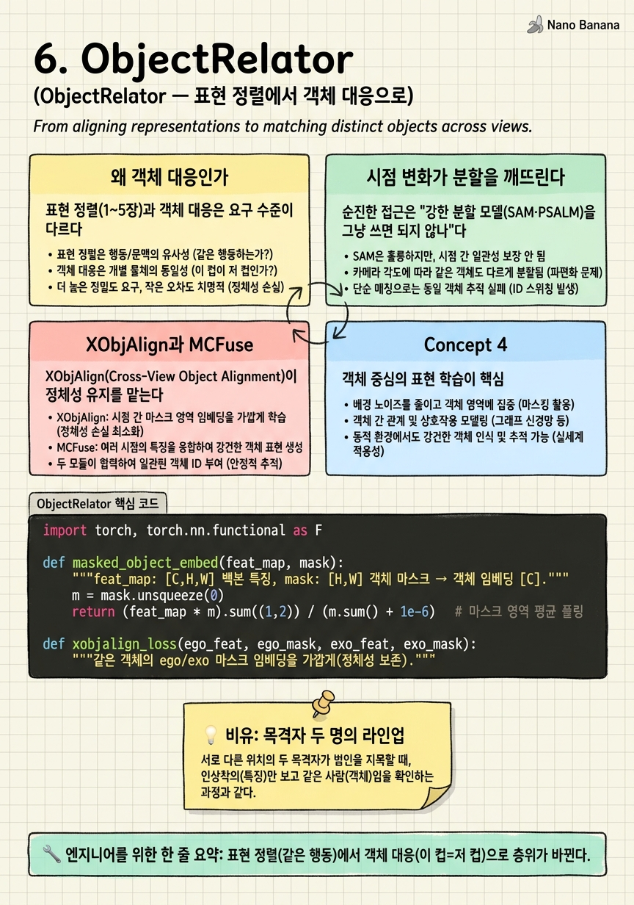

ObjectRelator
로봇에게 3인칭 시연 영상을 보여준다. 로봇은 '커피 내리기'인 줄은 안다. 그런데 시연 속 그 컵이 자기 눈앞 어느 컵인지를 모른다면, 한 발짝도 못 뗀다.

🎯 학습 목표
- 표현 정렬과 객체 대응의 근본적 차이를 안다
- cross-view object correspondence를 세그멘테이션으로 정식화하는 이유를 이해한다
- 시점 변화가 기존 분할 모델을 무너뜨리는 양상을 설명한다
- XObjAlign의 cross-view 일관성 자기지도 원리를 안다
- MCFuse가 위치 추정을 돕는 역할을 이해한다
1~5장은 표현을 정렬했다. 그런데 로보틱스와 AR이 실제로 요구하는 것은 다른 층위다. 로봇이 3인칭 시연을 1인칭으로 재현하려면, 시연 영상의 특정 객체가 자기 시야의 어느 객체인지를 픽셀 수준으로 알아야 한다. "같은 행동이다"로는 부족하다. "그 컵 = 이 컵"이 필요하다.
ObjectRelator(ICCV 2025 Highlight)는 무대를 바꾼다. 문제를 cross-view object correspondence — 한 시점에서 지정한 객체를 다른 시점에서 찾아 분할하는 것 — 로 세운다. 입력은 exo(또는 ego)의 객체 마스크, 출력은 ego(또는 exo)에서 그 객체의 마스크다.
핵심 진단이 날카롭다. 강력한 분할 모델(PSALM 등)조차 극단적 ego-exo 시점 변화 앞에서 무너진다 — 복잡한 배경에서 객체를 찾지도, 분할하지도 못한다. ObjectRelator는 두 모듈로 이를 고친다. XObjAlign(Cross-View Object Alignment)은 같은 객체의 ego 마스크와 exo 마스크가 유사한 임베딩을 갖도록 자기지도 일관성을 걸고, MCFuse는 위치 추정(localization)을 돕는다. 표현이 아니라 객체를, feature 유사도가 아니라 픽셀 마스크를 정렬하는 새 국면이다.
핵심 내용
왜 객체 대응인가
표현 정렬(1~5장)과 객체 대응은 요구 수준이 다르다.
| 축 | 표현 정렬 | 객체 대응 |
|---|---|---|
| 질문 | 같은 행동인가 | 이 객체가 저기 어디인가 |
| 출력 | feature 임베딩 | 픽셀 마스크 |
| 응용 | 인식·검색 | 로보틱스·AR 조작 |
로봇이 시연을 모방하려면 시연 속 도구·대상 객체를 자기 시야에서 특정해야 한다. AR이 1인칭·3인칭을 겹쳐 안내하려면 두 시점의 같은 물체를 잇는 앵커가 필요하다. 이 모든 게 객체 수준의 픽셀 대응을 요구한다.
그래서 ObjectRelator는 문제를 세그멘테이션으로 정식화한다. "exo에서 이 마스크로 지정한 객체를, ego에서 찾아 분할하라." 이렇게 하면 대응이 곧 픽셀 마스크로 나와, 다운스트림(로봇 파지, AR 오버레이)이 바로 쓸 수 있다.

시점 변화가 분할을 깨뜨린다
순진한 접근은 "강한 분할 모델(SAM·PSALM)을 그냥 쓰면 되지 않나"다. ObjectRelator의 진단은 아니다이다.
ego와 exo는 같은 객체라도 외형이 급변한다. exo에서 작게 보이던 컵이 ego에서는 손에 가려진 채 화면을 채우고, 조명·각도·가림(occlusion)이 완전히 다르다. PSALM 같은 모델은 이 극단적 도메인 이동 앞에서 객체를 찾지도(localization 실패), 정확히 분할하지도 못한다. 특히 복잡한 배경에서 오분할이 심하다.
핵심 원인은 이 모델들이 단일 시점 분할로 학습돼, cross-view 대응이라는 개념 자체가 없다는 것이다. "이 마스크가 가리키는 객체의 정체성"을 시점을 넘어 유지하는 능력이 없다.
따라서 필요한 것은 두 가지다 — (1) 시점이 바뀌어도 같은 객체의 정체성을 유지하는 표현, (2) 그 객체가 새 시점의 어디에 있는지 찾는 능력. ObjectRelator의 두 모듈이 정확히 이 둘을 담당한다.
XObjAlign과 MCFuse
XObjAlign(Cross-View Object Alignment)이 정체성 유지를 맡는다. 자기지도 방식으로, 같은 객체의 ego 마스크 영역 임베딩과 exo 마스크 영역 임베딩이 가까워지도록 정렬한다.
\[\mathcal{L}_{XObjAlign} = \big\| \phi(\text{obj}_{ego}) - \phi(\text{obj}_{exo}) \big\|^2\]
여기서 \(\phi\)는 마스크 영역의 객체 임베딩이다. 이 일관성 손실은 "시점이 달라도 같은 객체는 같은 표현"을 강제해, 정체성이 시점을 넘어 보존되게 한다. 1장의 triplet 정렬이 영상 전체 수준이었다면, XObjAlign은 객체 마스크 수준으로 내려온 정렬이다.
MCFuse는 위치 추정(localization)을 돕는다. 여러 단서(멀티 컨텍스트)를 융합해 "그 객체가 새 시점의 어느 영역인가"를 좁힌다. 정체성(XObjAlign)만으로는 "무엇인지"는 알아도 "어디인지"가 약한데, MCFuse가 이 위치 축을 보강한다.
두 모듈이 합쳐져, 극단적 시점 변화에도 객체를 찾아 분할하는 cross-view 대응이 완성된다. 다만 대응이 자기지도 정렬에 기대고 명시적 기하(geometry)는 쓰지 않아, 매칭 방식 자체를 더 밀어붙일 여지가 남는다 — 그게 7·8장의 출발이다.

💡 비유로 이해하기
한 사건을 두 목격자가 봤다. 한 명은 정문(exo)에서, 한 명은 사건 한복판(ego)에서. 형사가 정문 목격자에게 "저 사람"이라고 지목받은 인물을, 한복판 목격자의 기억에서 찾아야 한다. 문제는 두 시점에서 그 사람의 외형(각도·거리·가림)이 완전히 달라 보인다는 것이다.
기존 분할 모델은 각 목격자의 진술을 따로 처리할 뿐, "정문의 그 사람 = 한복판의 이 사람"을 잇지 못한다(단일 시점 학습). ObjectRelator는 두 가지를 한다. XObjAlign은 "같은 사람은 시점이 달라도 같은 인상착의 코드를 갖는다"고 훈련해 정체성을 잇고(무엇인지), MCFuse는 여러 단서로 "한복판 진술의 어느 위치인가"를 좁힌다(어디인지).
둘이 합쳐져야 라인업이 완성된다 — 정체성만으로는 "그 사람이 여기 있긴 한데 어디?"이고, 위치만으로는 "여기 누군가 있는데 그 사람 맞나?"다. 단, 이 형사는 인상착의 매칭(자기지도)에 의존하지 정밀 삼각측량(기하)은 안 쓴다 — 그 정밀화가 다음 챕터들이다.
💻 코드 예시
XObjAlign의 핵심 — 같은 객체의 ego·exo 마스크 임베딩을 정렬하는 자기지도 일관성 — 을 보자.
import torch, torch.nn.functional as F
def masked_object_embed(feat_map, mask):
"""feat_map: [C,H,W] 백본 특징, mask: [H,W] 객체 마스크 → 객체 임베딩 [C]."""
m = mask.unsqueeze(0)
return (feat_map * m).sum((1,2)) / (m.sum() + 1e-6) # 마스크 영역 평균 풀링
def xobjalign_loss(ego_feat, ego_mask, exo_feat, exo_mask):
"""같은 객체의 ego/exo 마스크 임베딩을 가깝게(정체성 보존)."""
e = F.normalize(masked_object_embed(ego_feat, ego_mask), dim=0)
x = F.normalize(masked_object_embed(exo_feat, exo_mask), dim=0)
return (1 - (e * x).sum()) # cross-view 객체 일관성
ego_f = torch.randn(64,32,32); exo_f = torch.randn(64,32,32)
ego_m = (torch.rand(32,32)>0.7).float(); exo_m = (torch.rand(32,32)>0.7).float()
print("XObjAlign loss:", xobjalign_loss(ego_f, ego_m, exo_f, exo_m).item())masked_object_embed가 객체 마스크 영역만 평균 풀링해 객체 단위 임베딩을 뽑는다 — 영상 전체가 아니라 객체가 단위라는 게 1~5장과의 결정적 차이다. xobjalign_loss는 같은 객체의 ego·exo 임베딩을 코사인으로 가깝게 만들어, 극단적 시점 변화에도 '같은 객체 = 같은 표현'을 강제한다. 이 자기지도 일관성이 정체성을 잇고, 별도의 MCFuse가 위치를 좁혀 최종 마스크를 낸다.
🏭 현업에서의 평가
✅ 시니어가 보는 것
- 표현 정렬로 안 되고 객체 대응이 필요한 응용을 구체화하는가
- 시점 변화가 단일 시점 분할을 깨는 원인을 진단하는가
- 정체성(무엇)과 위치(어디)를 분리해 설계하는가
⚠️ 레드 플래그
- SAM 같은 강한 분할이면 cross-view도 된다고 가정
- 객체 대응과 행동 인식(표현 정렬)을 같은 문제로 취급
- 자기지도 정렬과 명시적 기하 대응의 차이를 모름
🎤 예상 인터뷰 질문 (클릭하면 모범답안)
표현 정렬(1~5장)이 다 됐는데 왜 객체 대응이 또 필요한가?
표현 정렬은 '같은 행동인가'까지다. 로봇이 3인칭 시연을 모방하려면 시연 속 특정 객체가 자기 시야 어느 픽셀인지를 알아야 하고, AR은 두 시점의 같은 물체를 픽셀로 이어야 한다. 이 객체·픽셀 수준 대응은 feature 유사도로는 안 나와서, 문제를 cross-view 세그멘테이션으로 다시 세운다.
PSALM 같은 강한 분할 모델이 ego-exo에서 왜 무너지나?
단일 시점 분할로 학습돼 cross-view 객체 정체성 개념이 없다. ego-exo는 같은 객체라도 각도·거리·가림·조명이 급변해, 모델이 객체를 찾지도(localization) 정확히 분할하지도 못한다. 특히 복잡 배경에서 오분할이 심하다. 정체성 유지 + 위치 추정을 명시적으로 넣어야 한다.
XObjAlign과 MCFuse의 역할 분담은?
XObjAlign은 같은 객체의 ego·exo 마스크 임베딩을 가깝게 하는 자기지도 일관성으로 정체성(무엇인지)을 시점 넘어 보존. MCFuse는 멀티 컨텍스트를 융합해 위치(어디인지)를 좁힘. 정체성만으로는 위치가 약하고 위치만으로는 정체성이 약해, 둘을 분리·결합해야 극단 시점에서 대응이 완성된다.
✨ 핵심 요약
무대 전환
표현 정렬(같은 행동)에서 객체 대응(이 컵=저 컵)으로 층위가 바뀐다.
세그멘테이션 정식화
cross-view 대응을 '한 시점 마스크→다른 시점 마스크'로 세워 로봇·AR이 바로 쓰게 한다.
시점이 분할을 깬다
단일 시점 학습 모델(PSALM)은 극단적 ego-exo 변화에서 localization·분할 모두 실패.
XObjAlign=정체성
같은 객체의 ego·exo 마스크 임베딩을 정렬해 시점 넘어 정체성을 보존한다.
MCFuse=위치
멀티 컨텍스트 융합으로 '새 시점 어디에 있는가'를 좁힌다.
객체가 단위
영상 전체가 아니라 객체 마스크가 정렬 단위 — 1~5장과의 결정적 차이.
기하는 아직
자기지도 정렬에 의존, 명시적 매칭·기하는 미사용 — 7·8장의 출발점.
- Fu et al. (2025). ObjectRelator: Enabling Cross-View Object Relation Understanding Across Ego-Centric and Exo-Centric Perspectives. ICCV 2025. arXiv:2411.19083